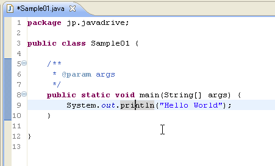
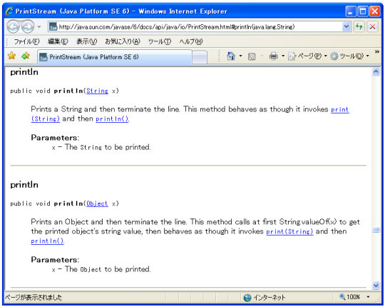
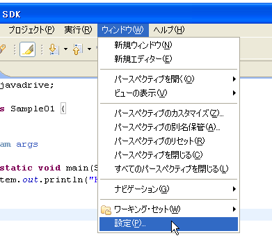
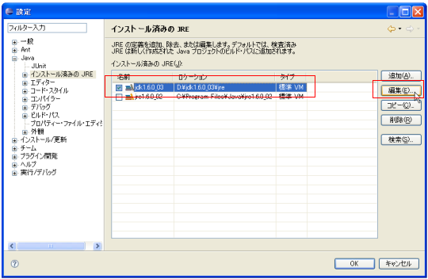
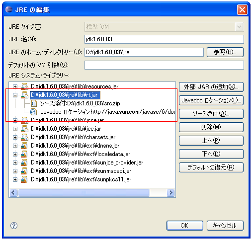
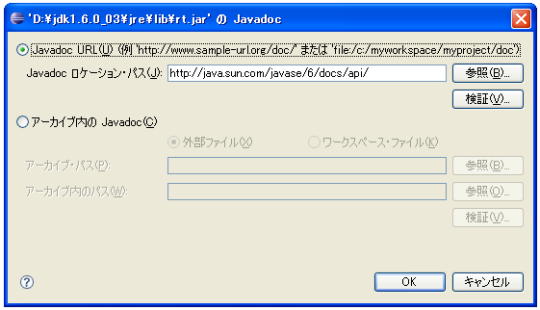
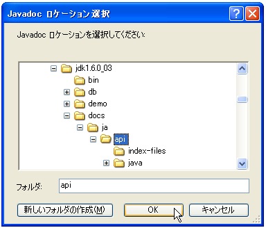
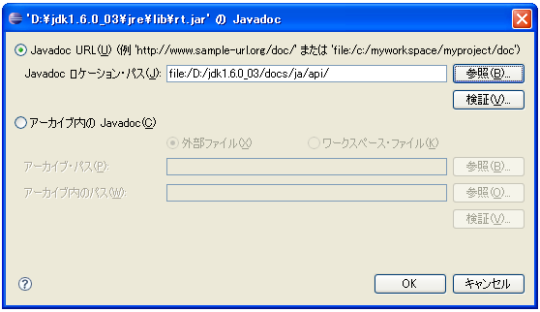
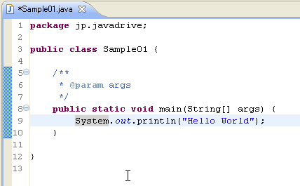
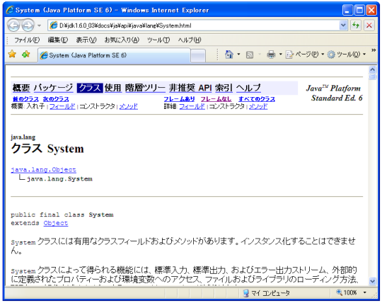

APIドキュメントの表示
Javaエディタ上でソースコードを編集している時に、クラスやメソッドに対してAPIドキュメントを表示させる方法を確認していきます。

調べたいクラスやメソッドをマウスでなどでクリックしてから「Shift＋F2」キーを押して下さい。外部ブラウザが立ち上がりAPIドキュメントが参照できます。

このままでも問題ありませんが、参照しているのがオンライン上のヘルプでありインターネットに接続している環境である必要があることや、英語のドキュメントとなっています。そこでローカルにダウンロードした日本語ドキュメントを参照するように変更します。
事前にJDKの日本語ドキュメントをダウンロードしておいて下さい。(「Java SE及びJDKに関するドキュメントのダウンロードを参照して下さい)。
では設定を行います。「ウィンドウ」メニューの中の「設定」をクリックして下さい。

左側ツリーの中の「Java」の中にある「インストール済みのJRE」をクリックして下さい。そしてデフォルトに設定されているJREを選択してから「編集」ボタンをクリックして下さい。

インストール済みのJREの中で、現在デフォルトとして使用しているJREをクリックして選択してから、右側にある「編集」ボタンをクリックして下さい。

JREシステム・ライブラリの一覧が表示されています。その中で「rt.jar」と書かれたものをクリックしてから「Javadoc ロケーション」ボタンをクリックして下さい。

参照するJavadoc のロケーション・パスを設定します。「参照」ボタンをクリックしてローカルに保存したドキュメントのディレクトリを指定して下さい。

参照されるドキュメントの位置が変更されました。「OK」ボタンをクリックして下さい。

では改めて試してみます。Javaエディタ上で「System」を一度クリックしてから「Shift＋F2」キーを押します。

次のようにブラウザが起動し、今度はローカルにあるドキュメントを参照して表示してくれます。

( Written by Tatsuo Ikura )

著者 / TATSUO IKURA
初心者～中級者の方を対象としたプログラミング方法や開発環境の構築の解説を行うサイトの運営を行っています。